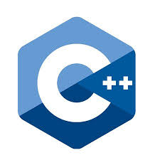

C is a general-purpose, procedural computer programming language supporting structured programming, lexical variable scope, and recursion, while a static type system prevents unintended operations. By design, C provides constructs that map efficiently to typical machine instructions and has found lasting use in applications previously coded in assembly language. Such applications include operating systems and various application software for computers, from supercomputers to embedded systems.
C was originally developed at Bell Labs by Dennis Ritchie between 1972 and 1973 to make utilities running on Unix. Later, it was applied to re-implementing the kernel of the Unix operating system.[6] During the 1980s, C gradually gained popularity. It has become one of the most widely used programming languages,[7][8] with C compilers from various vendors available for the majority of existing computer architectures and operating systems. C has been standardized by the ANSI since 1989 (see ANSI C) and by the International Organization for Standardization.
C is an imperative procedural language. It was designed to be compiled using a relatively straightforward compiler to provide low-level access to memory and language constructs that map efficiently to machine instructions, all with minimal runtime support. Despite its low-level capabilities, the language was designed to encourage cross-platform programming. A standards-compliant C program written with portability in mind can be compiled for a wide variety of computer platforms and operating systems with few changes to its source code. The language is available on various platforms, from embedded microcontrollers to supercomputers.

C++ is a high-level, general-purpose programming language created by Bjarne Stroustrup as an extension of the C programming language, or "C with Classes". The language has expanded significantly over time, and modern C++ has object-oriented, generic, and functional features in addition to facilities for low-level memory manipulation. It is almost always implemented as a compiled language, and many vendors provide C++ compilers, including the Free Software Foundation, LLVM, Microsoft, Intel, Oracle, and IBM, so it is available on many platforms.[6]
C++ was designed with a bias toward system programming and embedded, resource-constrained software and large systems, with performance, efficiency, and flexibility of use as its design highlights.[7] C++ has also been found useful in many other contexts, with key strengths being software infrastructure and resource-constrained applications,[7] including desktop applications, video games, servers (e.g. e-commerce, Web search, or SQL servers), and performance-critical applications (e.g. telephone switches or space probes).[8]
C++ is standardized by the International Organization for Standardization (ISO), with the latest standard version ratified and published by ISO in December 2017 as ISO/IEC 14882:2017 (informally known as C++17).[9] The C++ programming language was initially standardized in 1998 as ISO/IEC 14882:1998, which was then amended by the C++03, C++11 and C++14 standards. The current C++17 standard supersedes these with new features and an enlarged standard library. Before the initial standardization in 1998, C++ was developed by Danish computer scientist Bjarne Stroustrup at Bell Labs since 1979 as an extension of the C language; he wanted an efficient and flexible language similar to C that also provided high-level features for program organization.[10] C++20 is the next planned standard, keeping with the current trend of a new version every three years.[11]
Python is an interpreted, high-level, general-purpose programming language. Created by Guido van Rossum and first released in 1991, Python's design philosophy emphasizes code readability with its notable use of significant whitespace. Its language constructs and object-oriented approach aim to help programmers write clear, logical code for small and large-scale projects.[28]
Python is dynamically typed and garbage-collected. It supports multiple programming paradigms, including structured (particularly, procedural,) object-oriented, and functional programming. Python is often described as a "batteries included" language due to its comprehensive standard library.[29]
Python was conceived in the late 1980s as a successor to the ABC language. Python 2.0, released in 2000, introduced features like list comprehensions and a garbage collection system capable of collecting reference cycles. Python 3.0, released in 2008, was a major revision of the language that is not completely backward-compatible, and much Python 2 code does not run unmodified on Python 3.
The Python 2 language, i.e. Python 2.7.x, was officially discontinued on 1 January 2020 (first planned for 2015) after which security patches and other improvements will not be released for it.[30][31] With Python 2's end-of-life, only Python 3.5.x[32] and later are supported.
Python interpreters are available for many operating systems. A global community of programmers develops and maintains CPython, an open source[33] reference implementation. A non-profit organization, the Python Software Foundation, manages and directs resources for Python and CPython development.
Java is a general-purpose programming language that is class-based, object-oriented, and designed to have as few implementation dependencies as possible. It is intended to let application developers write once, run anywhere (WORA),[16] meaning that compiled Java code can run on all platforms that support Java without the need for recompilation.[17] Java applications are typically compiled to bytecode that can run on any Java virtual machine (JVM) regardless of the underlying computer architecture. The syntax of Java is similar to C and C++, but it has fewer low-level facilities than either of them. As of 2019, Java was one of the most popular programming languages in use according to GitHub,[18][19] particularly for client-server web applications, with a reported 9 million developers.[20]
Java was originally developed by James Gosling at Sun Microsystems (which has since been acquired by Oracle) and released in 1995 as a core component of Sun Microsystems' Java platform. The original and reference implementation Java compilers, virtual machines, and class libraries were originally released by Sun under proprietary licenses. As of May 2007, in compliance with the specifications of the Java Community Process, Sun had relicensed most of its Java technologies under the GNU General Public License. Meanwhile, others have developed alternative implementations of these Sun technologies, such as the GNU Compiler for Java (bytecode compiler), GNU Classpath (standard libraries), and IcedTea-Web (browser plugin for applets).
The latest versions are Java 14, released in March 2020, and Java 11, a currently supported long-term support (LTS) version, released on September 25, 2018; Oracle released for the legacy Java 8 LTS the last free public update in January 2019 for commercial use, while it will otherwise still support Java 8 with public updates for personal use up to at least December 2020. Oracle (and others) highly recommend uninstalling older versions of Java because of serious risks due to unresolved security issues.[21] Since Java 9, 10, 12 and 13 are no longer supported, Oracle advises its users to immediately transition to the latest version (currently Java 14) or an LTS release.
Web Development Languages
HTML5 is a markup language used for structuring and presenting content on the World Wide Web.
HTML5 was the fifth and last major version of HTML that is a World Wide Web Consortium (W3C) recommendation. The current specification is known as the HTML Living Standard and is maintained by a consortium of the major browser vendors (Apple, Google, Mozilla, and Microsoft), the Web Hypertext Application Technology Working Group (WHATWG).
HTML5 was first released in public-facing form on 22 January 2008,[3] with a major update and "W3C Recommendation" status in October 2014.[2][4] Its goals were to improve the language with support for the latest multimedia and other new features; to keep the language both easily readable by humans and consistently understood by computers and devices such as web browsers, parsers, etc., without XHTML's rigidity; and to remain backward-compatible with older software. HTML5 is intended to subsume not only HTML 4, but also XHTML 1 and DOM Level 2 HTML.[5]
HTML5 includes detailed processing models to encourage more interoperable implementations; it extends, improves and rationalizes the markup available for documents, and introduces markup and application programming interfaces (APIs) for complex web applications.[6] For the same reasons, HTML5 is also a candidate for cross-platform mobile applications, because it includes features designed with low-powered devices in mind.
Many new syntactic features are included. To natively include and handle multimedia and graphical content, the new video, audio and canvas elements were added, and support for scalable vector graphics (SVG) content and MathML for mathematical formulas. To enrich the semantic content of documents, new page structure elements such as main, section, article, header, footer, aside, nav, and figure are added. New attributes are introduced, some elements and attributes have been removed, and others such as a, cite, and menu have been changed, redefined, or standardized.
The APIs and Document Object Model (DOM) are now fundamental parts of the HTML5 specification[6] and HTML5 also better defines the processing for any invalid documents.[7]
Cascading Style Sheets (CSS) is a style sheet language used for describing the presentation of a document written in a markup language like HTML.[1] CSS is a cornerstone technology of the World Wide Web, alongside HTML and JavaScript.[2]
CSS is designed to enable the separation of presentation and content, including layout, colors, and fonts.[3] This separation can improve content accessibility, provide more flexibility and control in the specification of presentation characteristics, enable multiple web pages to share formatting by specifying the relevant CSS in a separate .css file, and reduce complexity and repetition in the structural content.
Separation of formatting and content also makes it feasible to present the same markup page in different styles for different rendering methods, such as on-screen, in print, by voice (via speech-based browser or screen reader), and on Braille-based tactile devices. CSS also has rules for alternate formatting if the content is accessed on a mobile device.[4]
The name cascading comes from the specified priority scheme to determine which style rule applies if more than one rule matches a particular element. This cascading priority scheme is predictable.
The CSS specifications are maintained by the World Wide Web Consortium (W3C). Internet media type (MIME type) text/css is registered for use with CSS by RFC 2318 (March 1998). The W3C operates a free CSS validation service for CSS documents.[5]
In addition to HTML, other markup languages support the use of CSS including XHTML, plain XML, SVG, and XUL.
CSS information can be provided from various sources. These sources can be the web browser, the user and the author. The information from the author can be further classified into inline, media type, importance, selector specificity, rule order, inheritance and property definition. CSS style information can be in a separate document or it can be embedded into an HTML document. Multiple style sheets can be imported. Different styles can be applied depending on the output device being used; for example, the screen version can be quite different from the printed version, so that authors can tailor the presentation appropriately for each medium.
JavaScript often abbreviated as JS, is a programming language that conforms to the ECMAScript specification.[7] JavaScript is high-level, often just-in-time compiled, and multi-paradigm. It has curly-bracket syntax, dynamic typing, prototype-based object-orientation, and first-class functions.
Alongside HTML and CSS, JavaScript is one of the core technologies of the World Wide Web.[8] JavaScript enables interactive web pages and is an essential part of web applications. The vast majority of websites use it for client-side page behavior,[9] and all major web browsers have a dedicated JavaScript engine to execute it.
As a multi-paradigm language, JavaScript supports event-driven, functional, and imperative programming styles. It has application programming interfaces (APIs) for working with text, dates, regular expressions, standard data structures, and the Document Object Model (DOM). However, the language itself does not include any input/output (I/O), such as networking, storage, or graphics facilities, as the host environment (usually a web browser) provides those APIs.
JavaScript engines were originally used only in web browsers, but they are now embedded in server-side website deployments, usually via Node.js. They are also embedded in a variety of applications created with frameworks such as Electron and Cordova.
Although there are similarities between JavaScript and Java, including language name, syntax, and respective standard libraries, the two languages are distinct and differ greatly in design.
JavaScript is the dominant client-side scripting language of the Web, with 95% of websites using it for this purpose.[9] Scripts are embedded in or included from HTML documents and interact with the DOM. All major web browsers have a built-in JavaScript engine that executes the code on the user's device.